企业 AI 化不是多开几个账号，是让 AI 真正进入协作。CoHarness 给团队一套权限分级的共享工作空间：每人一个独立环境、每个项目一个共享环境，能力由插件组合；模型、用量与每一次操作都走企业级的权限与审计。这套方案，我们自己团队每天都在用。
预览版 · APACHE-2.0 · 开源自托管 · 用量账本不记录密钥与聊天内容
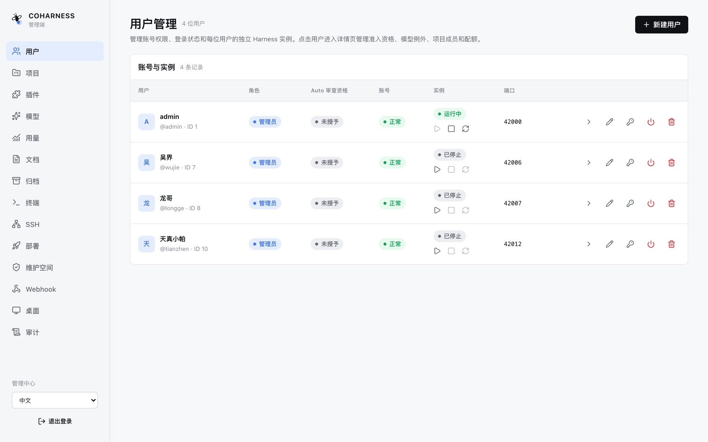
AI 工具散落在每个人手里，就没法管。CoHarness 自带完整管理后台：谁在用、用什么模型、花多少钱、做过什么操作，一处看清、一处管住。
员工账号、角色、登录状态，以及每人独立的 AI 工作环境，启动、停止、重启由管理员一手掌控。
管理员或员工创建的项目统一在册；成员分只读/可写，支持邀请加入；项目里的对话可全项目可见，也可仅创建者可见。
公司统一登记可用的模型服务商和模型清单，按角色、成员、项目授权；员工也可以登记自己的 Key，两条线互不混淆。
按成员和项目统计 Token 用量与成本估算，配额度、设告警；账本只记用量归属，不写 API 密钥和对话内容。
谁在什么时间做了什么管理操作，全部留痕可查；部署状态、终端、SSH、Webhook、桌面与归档，在同一个后台里。
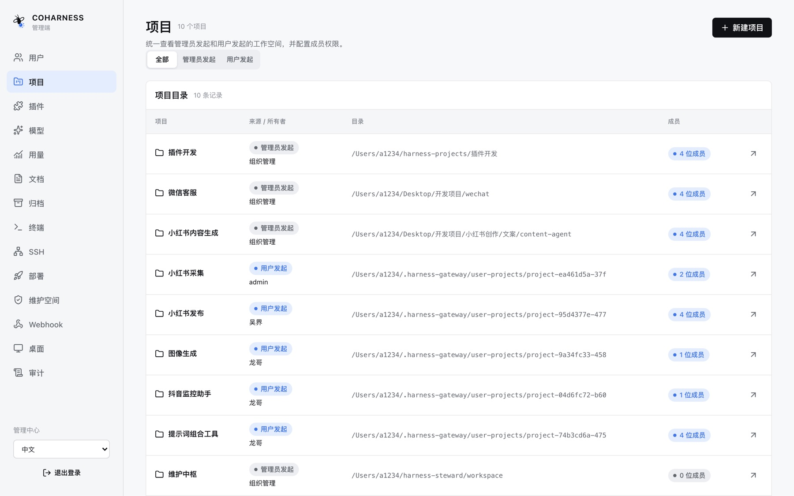
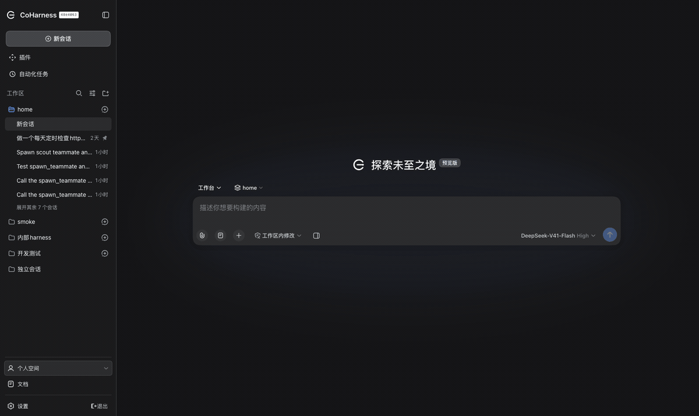
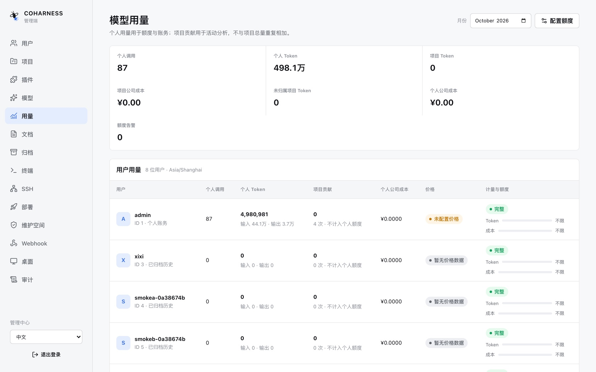
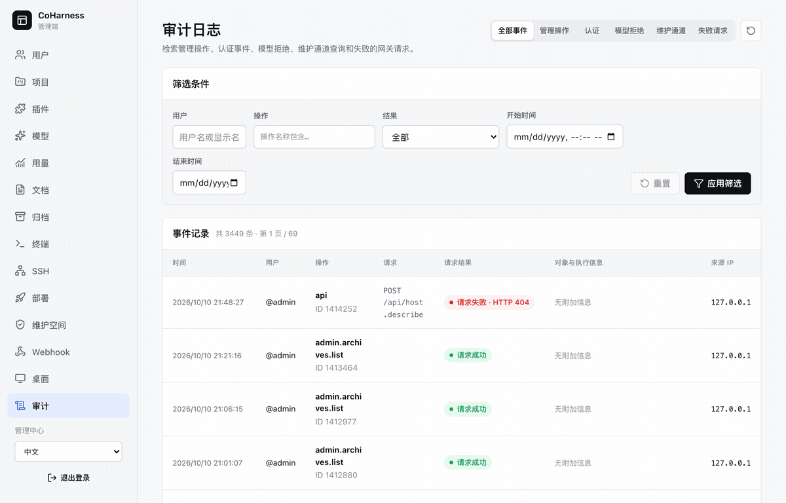
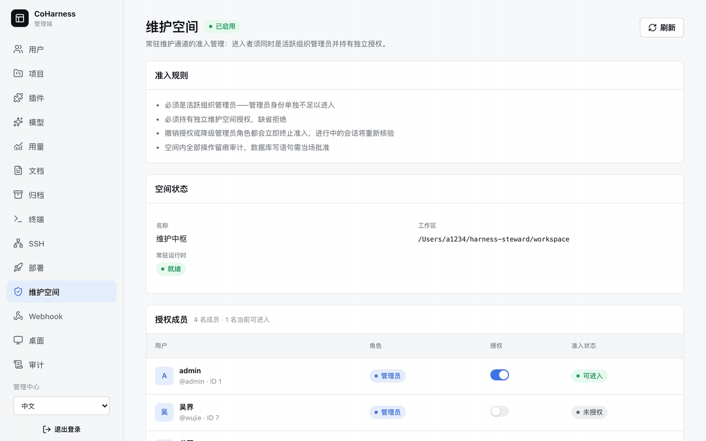
每位成员有只属于自己的 AI 工作环境，放个人任务；每个项目有一个共享的 AI 工作环境，放团队协作——两种环境没人用时自动休眠，有活儿时自动唤醒。
每位成员分配独立的 AI 工作环境和数据目录：个人任务的会话、记忆、文档都落在自己名下；自己参与的项目目录，按只读/可写权限映射进来。
项目环境直接在项目目录里工作，自带协作套件和项目记忆——成员在同一个环境里接力：会话、项目记忆和文档属于项目，不是每人一份拷贝。
两种环境都有明确的启动/就绪/停止状态：空闲自动休眠省资源，有操作自动唤醒；管理员手动停掉的不会被悄悄拉起；运维通道常驻。
工作环境可挂只读、工作区可写、完全放开三档权限；会话按目录精确授权，并过滤掉该参与者无权查看的内容；项目目录不允许与任何人的个人目录重叠。
开发时在本地直接起进程；Linux 生产环境每个工作环境跑在独立系统账号下，文件系统互相隔离——普通项目环境只看得见自己的项目目录。
管理员还有一个永不离线的专属 AI 工位，专门照看这套系统本身：默认只能只读查平台数据，每次写入都要当场特批一次，每条查询都进审计——连运维通道自己也被管着，这才是它能被信任的原因。
项目会记住持续的 AI 工作环境、每个人的贡献、任务委派关系、待决的审批和可恢复的进度——关掉浏览器、停掉某个 AI，工作还在原地。
用什么模型、给 AI 什么工具、谁能批什么、任务怎么委派，都由插件和配置组合而成，贴合团队自己的工作方式。
主 AI 可以把一部分活交给专业 AI，但要说清做什么、做到哪、负什么责——子任务不会悄悄拿到全部权限，内部细节也不会灌回主任务。
审批是在授权一次受控操作，提问是在补齐 AI 缺的业务判断；共享项目里，待决事项由一个有权限的人接手，结果进入共同历史，不会抢出两份答案。
验证有效的委派方式、评审步骤、上下文来源或工具策略，可以固化为团队的下一个插件、技能或工作流，下次直接复用。
以下均为当前代码库中已实现的能力。
插件化运行时，每次操作完整留痕：任务可暂停、恢复、分叉；模型请求、审批、计划、目标、待办、后台任务、定时提醒、工作流与用量遥测一应俱全。
读写文件、跑命令和持久终端、查代码、搜网页、调技能、收图片与文档附件，外加沙箱与目录策略兜底。
个人、工作区、项目三层记忆：AI 记住团队画像、工作约定、背景资料；每次开工自动带上该带的，可搜可改。
AI 能搜索、精读自己有权看的过往会话，并生成「接着干」的交接摘要：昨天的工作就是今天的上下文。
团队文档统一上传、按作用域归档、直接带进对话；有版本谱系和操作历史。
可长期共事的专家 AI：关系明确、可中断恢复、可继续追问，汇报什么由主任务挑。
定时与触发器驱动的后台任务：计划、目标、自动执行，关了浏览器活照样跑。
浏览器直接用：会话、历史、选模型、传附件、权限、任务、设置；中英双语，深浅主题。
插件目录持续扩展能力；支持 MCP 外部工具服务，也能桥接 Claude Code、Codex 的既有流程。
API Key 以凭据引用方式使用，不进日志；沙箱、目录授权、审批与权限档位，把「AI 能做什么」钉在每次执行上。
命令行批量任务、TypeScript / Python SDK、JSON-RPC、ACP 自动化协议、SSH 远程目标、Webhook 出站。
语音输入转文字、图片识别、文档与会话附件——输入不只有键盘。
以下是我们自己部署中真实在跑的项目形态。
选题、文案、素材到发布复盘的流水线，AI 记得住品牌口径和风格约定。
客服项目共享一个工作环境：知识文档入库、对话留痕，人和 AI 在同一份历史里接力。
定时巡检产出异常摘要和留痕报告，Webhook 把结果推进团队既有系统。
插件开发、提示词工具、图像生成，团队的 AI 项目在同一个边界里被管理、计量与审计。
以下截图与录屏均来自真实运行的 CoHarness 实例，不是效果图。
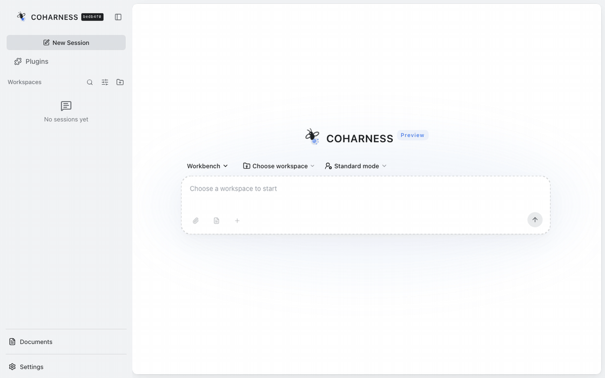
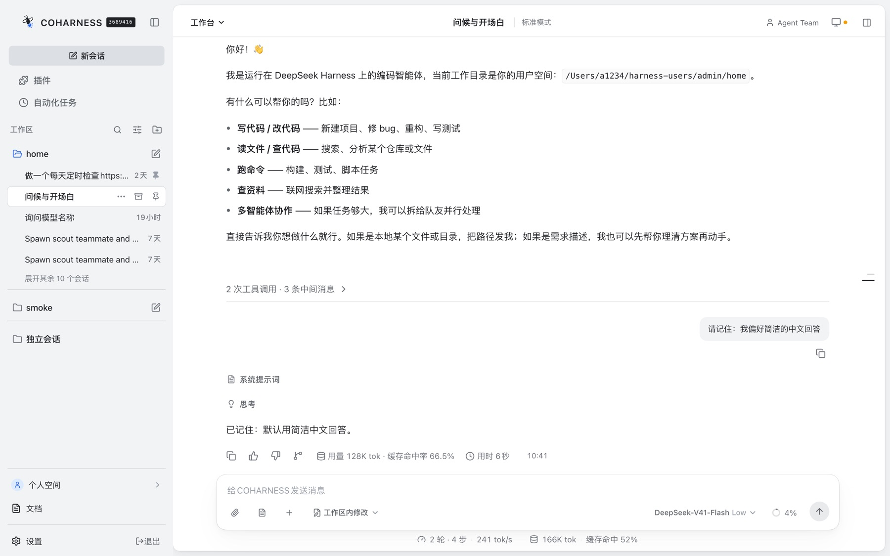
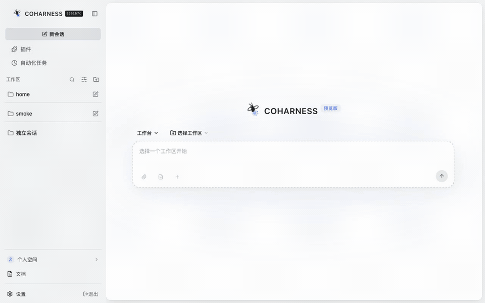
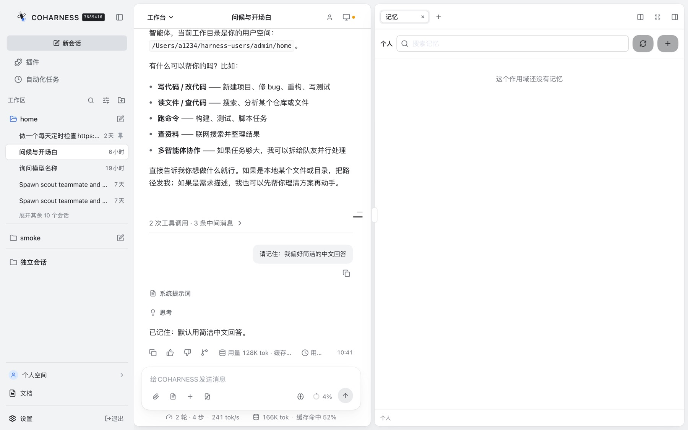
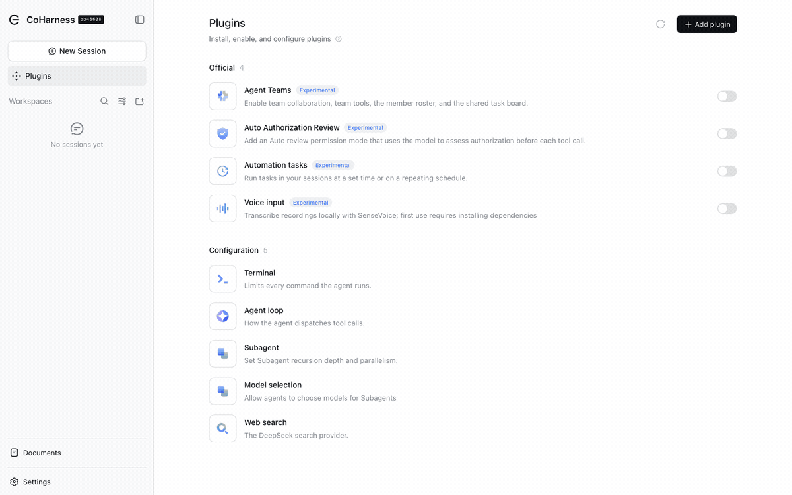
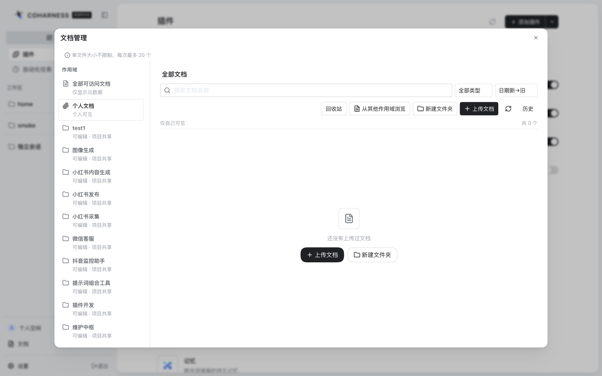
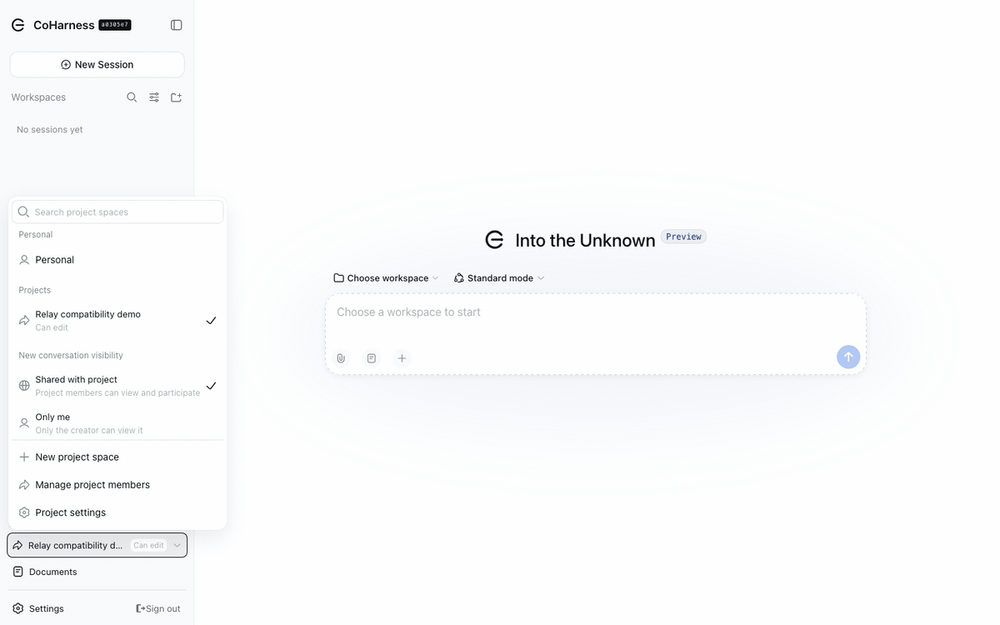
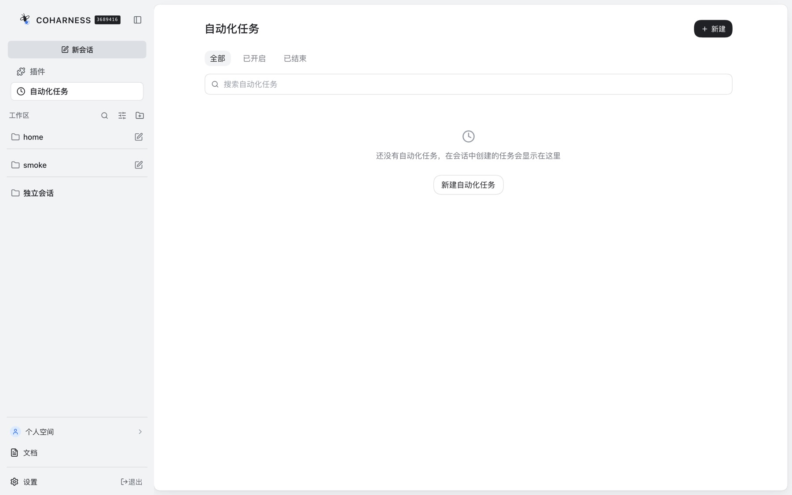
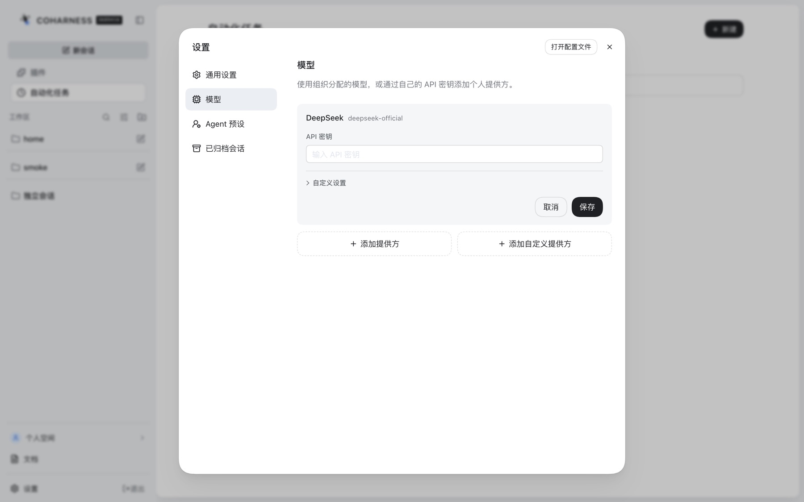
同一套 Web 应用自适应手机：浏览器直接访问已部署的系统，另有 Android 壳可选；推送通知可开。
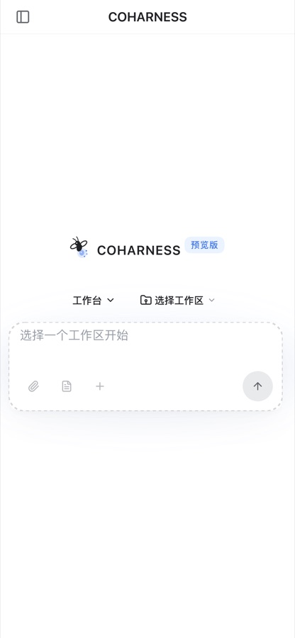
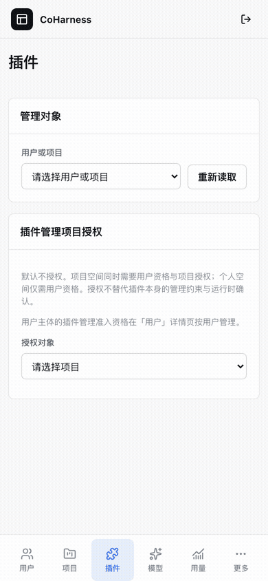
不需要数据库和管理后台：浏览器工作台 + 本地存储，适合先一个人体验。
→ 浏览器自动打开工作台（默认 :3080）；在 设置 → 模型 里配好 DeepSeek 或其他模型服务的 Key，选择工作目录就能开始。
认证账号 + 共享项目 + 管理后台 + 审计。生产部署按仓库里的部署手册一步步走：PostgreSQL、构建产物、Linux systemd 或 macOS launchd、域名入口。
→ 随后按 gateway/deploy 部署手册配置数据库、凭据与系统服务；Linux 上每个工作环境跑在独立系统账号下，隔离更强。
Apache-2.0。全部实现可审：管理后台、工作环境编排、文档与部署。所有数据落在自有基础设施，模型走你们自己的 Key，用量账本不记录密钥和聊天内容。